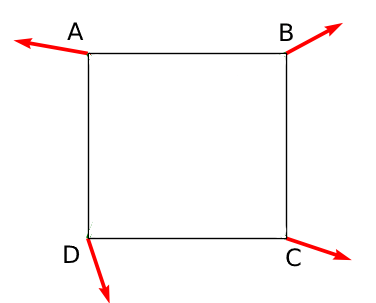
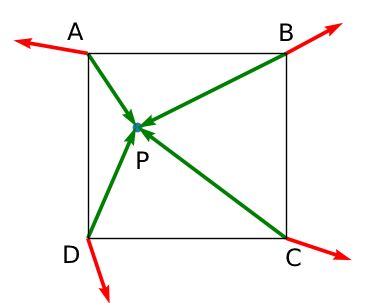
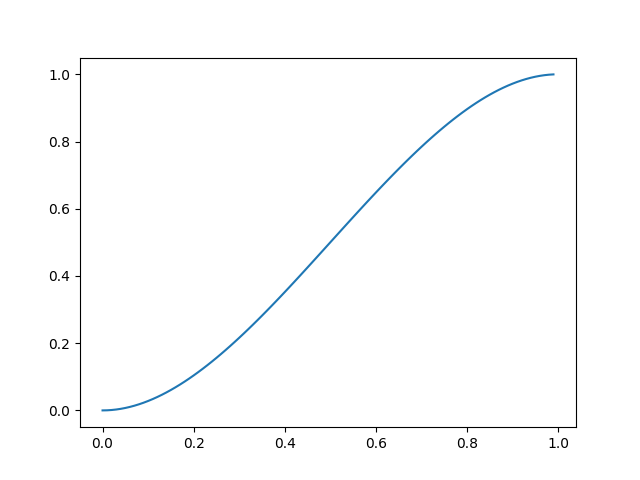

Solaris
Introduzione
Il Perlin Noise è un procedimento usato per la generazioni di textures o superfici procedurali, nello specifico si tratta di un procedimento che rientra tra quelli chiamati "gradient noise", utilizzato da artisti per creare textures realisticamente convincenti. Esistono vari algoritmi che utilizzano il gradient noise per produrre delle textures o superfici. In generale tutti questi hanno in comune una serie di operazioni (ebert2014texturing).
- Creazione di una griglia di gradienti pseudocasuali
- Esecuzione di un prodotto scalare tra questi vettori
- Interpolazione dei valori ottenuti attraverso il passo precedente
In particolare, questo progetto utilizzerà il primo algoritmo di gradient noise mai realizzato: il Perlin Noise, ideato dall'omonimo Ken Perlin nel 1983 (perlin:1985:IS).
Definizione Della Griglia
Si definisce una griglia che partiziona il piano in \(r\) quadrati, di lato unitario \(\varepsilon\), chiamati celle: \(C_1, \dots C_r\) i cui vertici sono punti a coordinate intere positive. Per qualsiasi punto \(Q\), vertice di uno dei suddetti quadrati, di coordinate \((x_{i},y_{j})\) si avrà che \(Q \in \mathbb{N}^{2}\).
Scelta dei Gradienti Pseudo-Casuali
Si definisce una funzione \(g : \mathbb{N}^2 \rightarrow \mathbb{R}^2\) che assegna ad ogni intersezione della griglia un vettore gradiente pseudocasuale di norma unitaria, a dei componenti. Tali versori sono chiamati vettori costanti.

Prodotto Scalare
Fissato un qualunque punto \(P\) di coordinate \((x,y)\) all'interno della griglia, ma non appartenente a nessuna delle rette che la compongono, esisterà un'unica cella \(C_{j}\), che lo contiene, con \(j=1, \dots, r\). \(\forall i : i = 0, \dots, 4\). Si prendono i vettori \(v_{i,j}\) che spostano i quattro vertici della cella in \(P\). Per ciascun vettore \(v_{i,j}\) si calcola il prodotto scalare tra \(v_{i,j}\) e il vettore costante che ha in comune l'origine con \(v_{i,j}\). Per comodità in seguito chiameremo \(A, B, C\) e \(D\) i quattro vertici della cella, come in figura.

Si ottengono così 4 valori, ciascuno associato ad un vertice del quadrato \(C_{j}\) che contiene il punto \(P\).
\(a = g(A) \cdot (P - A)\) ,
\(b = g(B) \cdot (P - B)\) ,
\(c = g(C) \cdot (P - C)\),
\(d = g(D) \cdot (P - D)\) .
Se P appartiene ad una delle rette della griglia, P può appartenere a 2 oppure a 4 celle, se è un vertice della griglia. In questi due casi, si decide per convenzione che:
- se P appartiene ad un lato orizzontale comune a due celle: si considera P appartnente alla cella i cui punti C e D hanno coordinata y minore
- se P appartiene ad un lato verticale comune a due celle: si considera P appartnente alla cella i cui punti A e D hanno coordinata x minore
- se P è un vertice della griglia: si considera P appartnente alla cella il cui punto D ha entrambe le coordinate x ed y minori
Interpolazione
Infine, per calcolare il valore della funzione nel punto \((x,y)\) si esegue un'interpolazione. Invece che utilizzare un'interpolazione lineare, la quale non garantirebbe una derivata uguale a 0 negli intorni di 1 e 0, si utilizza un'interpolazione polinomiale utilizzando la funzione
\(s(x) = 3x^{2} - 2x^{3}\)
con \(0 < x < 1 \)

La quale invece soddisfa i requisiti richiesti. Si procede dunque in questo modo:
- Si calcola l'interpolazione tra i valori \(a, b\)
- Si calcola l'interpolazione tra i valori \(c, d\)
- Si interpola ulteriormente tra i valori ottenuti nei due passi precedenti
\(S_{A} = a + s(x-x_{A})(b - a)\)
\(S_{B} = c + s(x-x_{A})(d - c)\)
\(z = S_{A} + s(y-y_{A})(S_{B} - S_{A})\)
Il punto \(z\) così ottenuto è il valore del rumore di Perlin nelle coordinate \((x,y)\)
Bibliografia
- [ebert2014texturing] Ebert, Texturing and Modeling: A Procedural Approach, Elsevier Science (2014).
- [perlin:1985:IS] "Ken Perlin", An Image Synthesizer, 287-296, in in: "Computer Graphics, Vol. 19, No. 3.", edited by (1985)